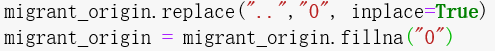
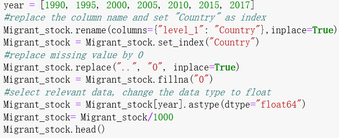

Immigration data analysis
Why analyse immigration?
Immigration including refugee has become hot topics during these years. So the curiosity pushes me to study this area in more detail.
Data source
The dataset is come from the United Nations. Datalink
- Department of Economic and Social Affairs. Population Division.
The database includes data from about 230 countries for the period 1990-2017
There are three datasets
- Total international migrant stock
- By destination and origin
- By age and sex
Data cleaning
- Select the datasheets which will use in the data analysis. and put them together in one Excel file (using excel)
- Replaced special punctuation " . ." and missing value by "0"

- Remove irrelevant data for analyzing. Set index and modify data type
